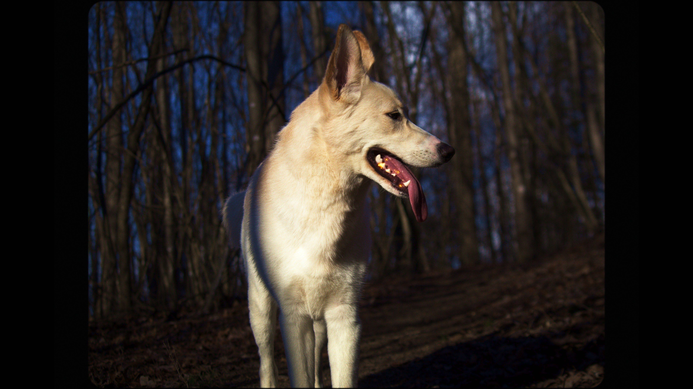
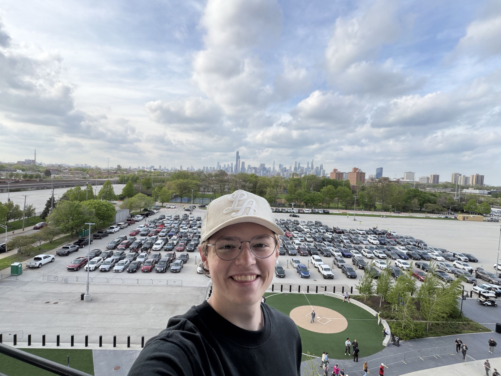

Programming & Game Tools
C#JavaHTMLLuaUnity
GodotBlenderGame DevelopmentComputer Building
Technical Troubleshooting
Multidisciplinary Portfolio
Film, commercial production, music, sound design, photography, games, and creative technical work.
Proof of life



The practical mix behind my work: code, cameras, audio, editing, and hands-on problem solving.
My NYSM internship gave me real time on set, in the edit, and around working commercial crews.
New York Sound & Motion / Western Massachusetts
I worked with New York Sound & Motion on commercial production, learning how shoots move from setup to final delivery. I shot footage, edited commercials, wrote a commercial, helped set up lighting, watched the monitor, learned how to slate, and slated on both commercials and short films.
Outside the internship, I also PA'd for two short films in Massachusetts, which gave me more experience with crew dynamics, equipment, set flow, and the business side of commercial production.
Visit NYSM

Sketches, soundtrack ideas, and original tracks built around mood, texture, and atmosphere.
Film work, promos, and edits where I get to shape the story from footage to final cut.
 Short film
Short film
Short film collaboration with the UGA Classic Films Club. I contributed to the project as part of the production team.
Watch on YouTubePromo video for the Strange Range at Strange Duck Brewing in Commerce, GA. I shot, edited, and handled the full video production.
Watch on FacebookA small mix of behind-the-scenes, travel, camera tests, and things I thought looked worth keeping.


Selected projects that show the range of what I make, from commercial production and study games to short films and music experiments.
Worked across commercial production: shooting footage, editing commercials, writing copy, lighting setups, monitor work, slating, and learning crew workflows.
Visit NYSMBuilt a GeoGuessr-style study game in the Unity game engine for a history map quiz, then shared it with classmates to help everyone prepare.
Play gameShot and edited a promotional reel for the Strange Range at Strange Duck Brewing in Commerce, GA.
View projectCollaborated with the UGA Classic Films Club on a short film production.
View projectA collection of original tracks, soundtrack ideas, and sound experiments.
ListenReach out for film work, music, editing, sound, creative projects, or anything weird that needs making.